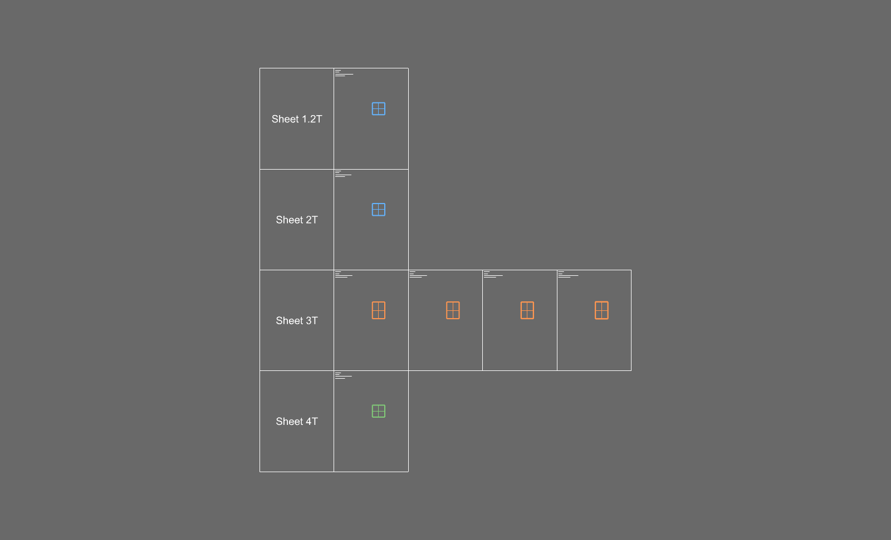

ShTable
번호별 대표 판재를 도면 평면에 표로 늘어놓습니다. 두께마다 한 줄, 번호마다 한 칸이 만들어지고, 칸 안에 판재(와 붙인 profile)의 복사본이 정면으로 놓입니다. 이 표가 가공도(ShFd)를 그리는 바탕입니다.
판재 가공도를 그릴 자리를 만들 때 사용합니다. BpTable 과 같은 규칙으로 동작합니다.
S_Center1 선과 등록된 단면(SSP), 방향이 기록된 와이어프레임(WVector)을 바탕으로 동작합니다.
| 항목 | 설명 |
|---|---|
| 줄 | 두께마다 한 줄. 첫 칸에 Sheet 3T 처럼 두께가 적힙니다. |
| 칸 | 번호마다 한 칸. 왼쪽 위에 번호, 수량(Qnt-), 크기 · 두께 · 끝 모양, 면적이 적힙니다. |
| 대표 판재 | 그 번호의 판재 하나와 붙인 profile 을 복사해 정면으로 눕힙니다. 판 앞면이 도면 평면에 놓입니다. |
| 칸 크기 | 고른 판재 중 가장 큰 폭 · 높이의 6배. 가공도의 여러 그림이 들어갈 자리입니다. |
| 레이어 | 칸의 글자는 Text · Profile_No_Qnt 레이어에 놓입니다. |
| 명령어 | 설명 |
|---|---|
| ShNo | 판재 번호 — 표를 만들기 전에 실행합니다. |
| ShFd | 판재 가공도 — 표의 대표 판재 둘레에 가공도를 그립니다. |
| BpTable | 백패널 가공도 표 — 같은 규칙입니다. |